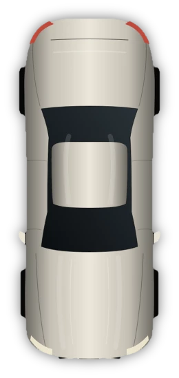
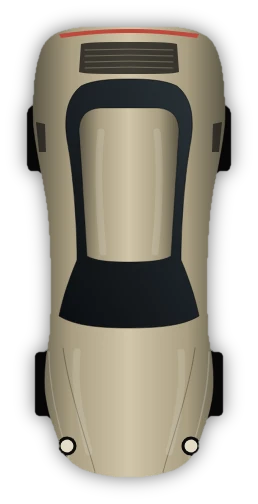
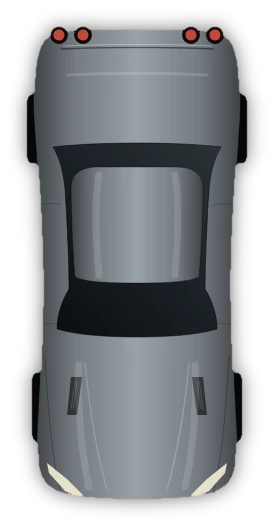
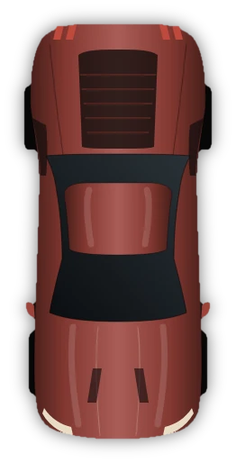

Issue 01The Performance Collection
Five cars,
considered.
A long look at five modern performance cars: what each one is for, how it is built, and why it earns your attention.
Enter the collectionManifesto
A fast car is easy to describe. A good one takes longer.
AETHER GT is a magazine-length study of five cars that share very little on paper. One keeps a twin-turbo V8 under a four-door body. One hangs a flat-six behind the rear axle. One carries a name from 1978, and one moved its V8 behind the driver after seven generations of keeping it in front.
What they share is conviction. Each answers a single question with unusual clarity, and we have tried to describe each answer plainly: what the car is, how it is put together, and what it asks of the person driving it. No superlatives we cannot support. No numbers without their qualifications.
In this issue
Five cars, five answers
-
01 BMW
M5 F90 Competition
Four doors. Twin-turbo V8. Uncompromising. Explore -
02 Porsche
911 Carrera 4S
The rear-engined icon, with all-wheel-drive grip. Explore -
03 Nissan
GT-R R35
The all-wheel-drive giant-killer. Explore -
04 Toyota
GR Supra MK5
Rear-drive precision, reborn. Explore -
05 Chevrolet
Corvette C8
Mid-engine, at last. Explore
The road
Five cars, one country lane.
Scroll the lane from first bend to last. Each car waits where its character is easiest to read.
-

01 · BMW M5 F90 Competition
The four-door that refuses to apologise
Family-sized, flat-out quick. The road opens with the one that carries the most luggage and the most noise.
-

02 · Porsche 911 Carrera 4S
Engine behind, grip everywhere
Narrow-shouldered and rear-engined; all-wheel drive turns the first long bend into a straight line.
-

03 · Nissan GT-R R35
Wide, heavy, relentless
Broad haunches and a computer-assisted grip that still feels faintly mechanical at every corner exit.
-
04 · Toyota GR Supra A90
Short wheelbase, quick hands
A compact coupe that rotates early and settles quickly: the road tightens and it simply follows.
-

05 · Chevrolet Corvette C8 Stingray
Engine moves to the middle
The mid-engine layout closes the journey: low, wide and pointed at the horizon.
Lead story · 01
The saloon with the supercar’s pulse.
The M5 Competition asks a question most performance cars avoid: what if you did not have to choose? There are four doors and a proper boot. There is also a 4.4-litre twin-turbo V8 making about 625 PS, depending on market.
It is the one car in this issue that can take a family to dinner and then remind everyone at the table why they like cars. It is also the only one with its own interactive 3D page.
Four doors and a supercar’s pulse is not a compromise. It is a decision.
How we look at a car
Three principles
-
01
Proportion
Before the figures, the shape. A car is understood from across a car park long before it is understood from a specification sheet. We begin with where the engine sits, how long the wheelbase is and how low the roofline falls, because those decisions explain nearly everything that follows.
-
02
Restraint
Power is the easiest thing to advertise and the least interesting thing to know. We give the number once, mark it where it varies by market or model year, and spend the rest of the page on what it is attached to.
-
03
Use
These are cars to be driven, not only admired. Each page asks what the car is like on an ordinary Tuesday as well as on your favourite road, because a car worth owning has to be good at both.
Side by side
Five layouts, one scale
| Car | Engine | Position | Length |
|---|---|---|---|
| BMW M5 F90 | 4.4 L twin-turbo V8 | Front | 4,966 mm |
| Porsche 911 Carrera 4S | 3.0 L twin-turbo flat-six | Rear | 4,519 mm |
| Nissan GT-R R35 | 3.8 L twin-turbo V6 | Front | 4,710 mm |
| Toyota GR Supra MK5 | 3.0 L turbo inline-six | Front | 4,379 mm |
| Chevrolet Corvette C8 | 6.2 L naturally aspirated V8 | Mid | 4,630 mm |
Figures are manufacturer-published values for the generation named, rounded, and are repeated from each car’s own page, where the specifications carry their qualifications. Bars share one scale (5,000 mm is the full bar) and are a dimension chart, not a drawing of a car.
Portfolio
The collection, in frame
Journal